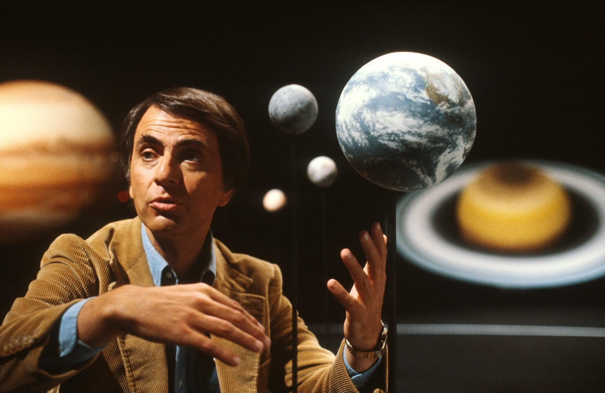

As contribuições de Sagan foram vitais para o descobrimento das altas temperaturas superficiais do planeta Vênus. No início da década de 60, a ciência nada sabia sobre quais eram as condições básicas da superfície deste planeta, e Sagan enumerou as possibilidades em um artigo que posteriormente foi divulgado em um livro da Time intitulado Planetas. Em sua opinião, Vênus era um planeta seco e muito quente, em oposição ao paraíso temperado que outros haviam imaginado. Sagan investigou as emissões de rádio provenientes de Vênus e chegou à conclusão de que a temperatura superficial deste planeta deveria ser aproximadamente 500 °C. Como cientista visitante do Jet Propulsion Laboratory da NASA, participou das primeiras missões do programa Mariner a Vênus, trabalhando com o desenho e gestão do projeto. Em 1962, a sonda Mariner 2 confirmou suas conclusões sobre as condições superficiais do planeta.
Carl Sagan foi um dos primeiros a idealizar a hipótese de que uma das luas de Saturno, Titã, poderia abrigar oceanos de compostos líquidos em sua superfície, e que uma das luas de Júpiter, Europa, poderia abrigar oceanos de água subterrâneos, isto faria com que Europa fosse potencialmente habitável por formas de vida. O oceano de água subterrâneo de Europa foi posteriormente confirmado de forma indireta pela sonda espacial Galileu. O mistério da névoa avermelhada de Titã também foi resolvido com a ajuda de Sagan, cuja explicação foi que a névoa existia devido às moléculas orgânicas complexas em constante chuva na superfície da lua saturniana.
Sagan também contribuiu para a melhor entendimento das atmosferas de Vênus e Júpiter e das mudanças sazonais em Marte. Sagan determinou que a atmosfera de Vênus é extremamente quente e densa com pressões que aumentam gradualmente até a superfície do planeta. Também notou o aquecimento global como um perigo crescente de origem humana e comparou com a evolução natural de Vênus, cujo efeito estufa o tornou descontroladamente quente e impróprio para a vida. Sagan e seu colega da Universidade Cornell, Edwin Ernest Salpeter, especularam sobre a possibilidade da existência de vida nas nuvens de Júpiter, dada a composição da densa atmosfera do planeta, rica em moléculas orgânicas. Sagan também estudou as variações de cor na superfície de Marte e concluiu que não se tratava de vegetações, ou se deviam às mudanças sazonais como muitos acreditavam, mas sim ao deslocamento de poeira da superfície causado por tempestades.
No entanto, Sagan é mais conhecido por suas pesquisas sobre a possibilidade de vida extraterrestre, incluindo a demonstração experimental da produção de aminoácidos por radiação e a partir de reações químicas básicas. Em 1994, Sagan recebeu a Medalha Bem-Estar Público, a maior condecoração da Academia Nacional de Ciências dos Estados Unidos por suas distintas contribuições para a aplicação da ciência e para o bem-estar da humanidade. Diz-se que lhe foi negado o ingresso à academia porque sua atividade havia gerado impopularidade ante outros cientistas. Em suma, Carl Sagan teve um papel significativo no programa espacial americano desde o seu início. Foi consultor e conselheiro da NASA desde os anos 1950, trabalhou com os astronautas do Projeto Apollo antes de suas idas à Lua e chefiou os projetos da Mariner e Viking, pioneiras na exploração do sistema solar que permitiram obter importantes informações sobre Vênus e Marte. Participou também das missões Voyager e da sonda Galileu. Foi decisivo na explicação do efeito estufa em Vênus e o descobrimento das altas temperaturas do planeta, na explicação das mudanças sazonais da atmosfera de Marte e na descoberta das moléculas orgânicas em Titã, satélite de Saturno. Ele também foi um dos maiores divulgadores da ciência de todos os tempos ao apresentar a série Cosmos em 1980.
Foi durante a vida um grande defensor do ceticismo e do uso do método científico. Promoveu a busca por inteligência extraterrestre através do projeto SETI e instituiu o envio de mensagens a bordo de sondas espaciais, destinadas a informar possíveis civilizações extraterrestres sobre a existência humana. Mediante suas observações da atmosfera de Vênus, foi um dos primeiros cientistas a estudar o efeito estufa em escala planetária. Também fundou a organização não governamental Sociedade Planetária e foi pioneiro no ramo da exobiologia. Sagan passou grande parte da carreira como professor da Universidade Cornell, onde foi diretor do laboratório de estudos planetários. Em 1960 obteve o título de doutor pela Universidade de Chicago.
Prolífico escritor escreveu mais de 600 publicações científicas. É autor de mais de 20 livros de ciências e ficção científica. Em 1978 recebeu o Prêmio Pulitzer por sua obra de não ficção, “Os Dragões do Éden: Especulação sobre a Evolução da Inteligência Humana” (1977). Conquistou a fama com sua obra “Cosmos” (1980), que foi adaptada para uma série televisiva e se tornou um sucesso mundial. Seu romance “Contact” (1997) serviu de base para um filme do mesmo nome. Em seu último livro “O Mundo Assombrado pelos Demônios”, o escritor ataca todo tipo de crendices e bruxarias. Carl Sagan faleceu em Seattle, Estados Unidos, no dia 2 de dezembro de 1996.
| obras de Carl Sagan | obras | data de publicação | ||
|---|---|---|---|---|
| Cosmos | 1980 | |||
| Cometa | 1970 | |||
| contact | 1985 | |||
| dragões do éden | 1979 | |||
.webp) Testando conhecimentos
Testando conhecimentos